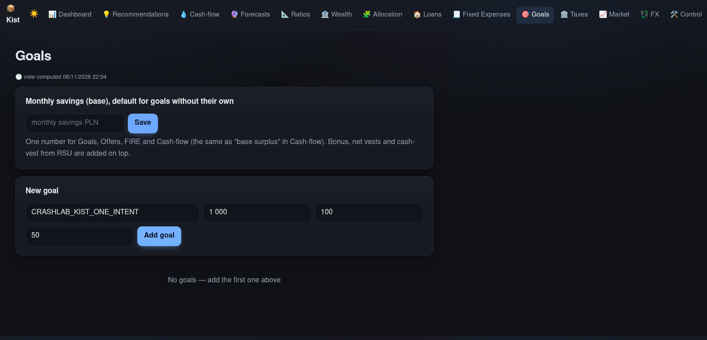
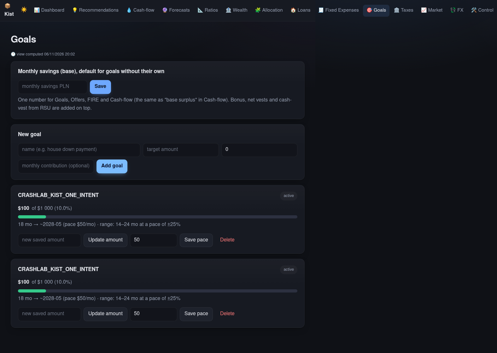
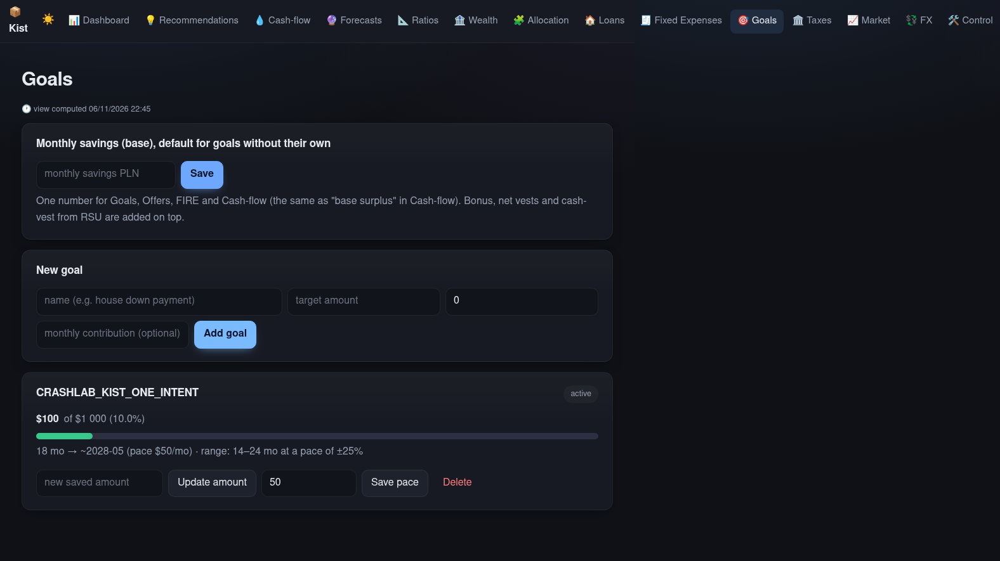
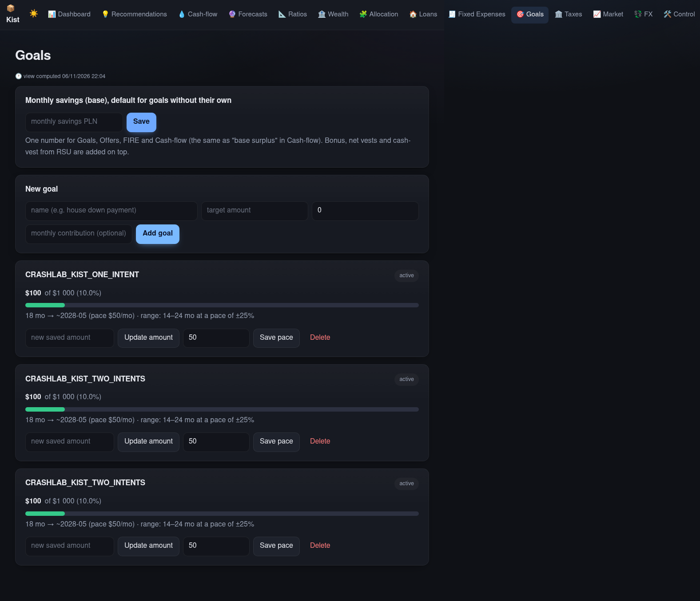

CrashLab — Kist external runHermes plugin
CrashLab
One intent.
Two goals.
An external app, a real browser, and the saved state proving the repair.
Kist Finance · unmodified checkout · Chromium run
Real browser and SQLite evidence. Replay, not a live screen capture.
01 — reproduce
The page never confirms. The database has two goals.
The server commits; the response is dropped; the form stays ready; the user retries.

Committed but not shown. One goal in SQLite.

After retry: two goals for one intent.
Kist 7a196af9 · before run
02 — the contract
The rule is not “the page looks fine.”
CrashLab reads the durable goal row, not the app’s success banner.
frozen contract · SQLite observer
03 — repair
Hermes edits the app, not the test.
A stable intent key is generated once and reused after the lost response.
Hermes one-shot repair · patch retained
04 — prove
Same contract. One goal.
The control still creates two deliberately separate goals, including identical names and fields.

Retry resolves to one durable goal.

Control: two deliberate goals remain two.
same frozen contract · repaired Kist
05 — second family
Capacity is a different promise.
The inventory campaign checks two intents competing for the last unit — with independent SQLite observations.
fixture campaign · HTTP concurrency · 5 repetitions each
CrashLab
A failure is not
a banner.
It is the state left behind. A repair is real only when the same promise still passes.
2 → 1 · control 2 · saved regression
Kist external run + inventory campaign · working expansion